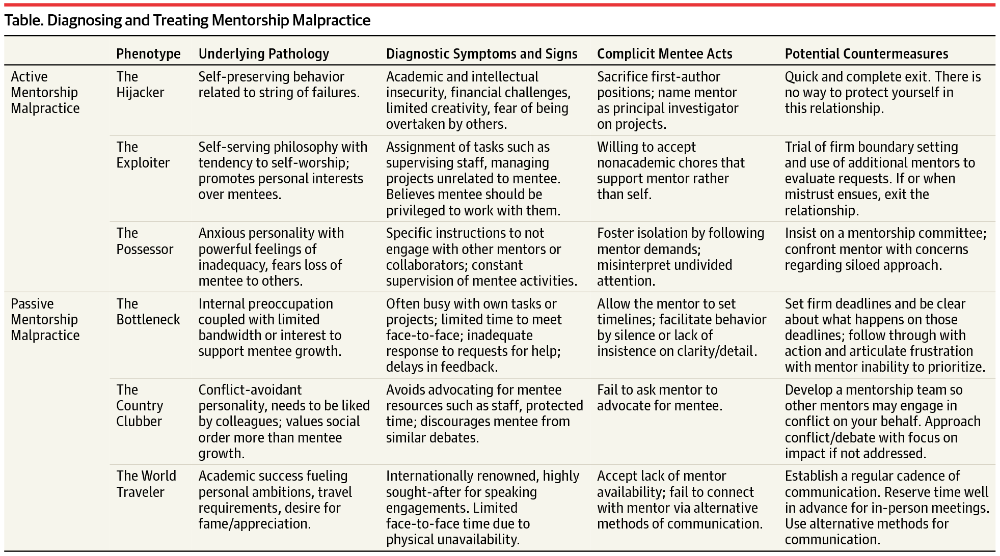

Academic bullying culture
We may tend to think of bullying as something that happens primarily in grade school. We see someone we know get beat up or made fun of and we understand that to be bullying. Thankfully, many kids grow out of the need to bully others. However, bullying often continues into adult life and the workplace. In the 2021 WBI U.S. Workplace Bullying Survey, 49% of Americans report being affected by bullying at work, with 30% having had been or are currently being bullied, and 19% having witnessed bullying. Common tactics used by bullies include:
- Falsely accusing someone of “errors” not actually made (71%)
- Staring, glaring, being nonverbally intimidating, and clearly showing hostility (68%)
- Discounting the person’s thoughts or feelings (“oh, that’s silly”) in meetings (64%)
- Using the “silent treatment” to “ice out” & separate from others (64%)
- Exhibiting presumably uncontrollable mood swings in front of the group (61%)
- Making up rules on the fly that even she/he does not follow (61%)
- Disregarding satisfactory or exemplary quality of completed work despite the evidence (58%)
- Harshly and constantly criticizing, having a different standard for the target (57%)
- Starting, or failing to stop, destructive rumors or gossip about the person (56%)
- Encouraging people to turn against the person being tormented (55%)
among many, many others. It's worth reading the entire page and reviewing this resource to see if any of the tactics sound familiar. I've witnessed most of these tactics being used, but still never made the connection that these were forms of bullying until I saw them listed here and read that many people across the country reported having similar experiences.
So, what is academic bullying in particular?
Academic bullying can certainly take on the forms listed above, often with the added element that bullies in academia can couch their language under the guise of mentorship, pointing out "errors" to give the impression that they are an expert in the topic at hand, and preying on the naivety of students (and sometimes other faculty) to not recognize this ploy for what it really is. But more importantly, academic bullying isn't just a way for people to feel powerful; it's often a way for people to obtain real power. Put another way:
Bullying is a means for mediocre scientists to rise to the top. Some star academics reached their position because they are bullies, not in spite of it.
This observation comes from an article titled "How bullying becomes a career tool", which is one page long and deserves to be read in its entirety. In this article, the authors find that bullying tends to begin when a mediocre academic feels overshadowed by a more successful colleague and decides to sabotage their career. This sabotage can take the form of:
Routinely overstating one’s own achievements but belittling those of colleagues, planting false stories to harm the reputation of colleagues, or publicly ridiculing, insulting or tarnishing the achievements of colleagues.
When the bully is successful, their colleague will find this environment too hostile to work in and leave. In their place, the bully will be promoted and be in a good position to promote their allies, thus consolidating their power. But notice also two passages in the article that may challenge our subconscious assumptions of what bullying looks like:
- Bullying doesn't happen in isolation
-
One female international researcher working in the Netherlands reported that when she won a major grant, people started to doubt the capabilities of one of the department’s crown princes who was supposed to be promoted — which then was blamed on her. She has been bullied out of the university as a result, and the “male colleague is associate professor now, even though his performance is not more than average.”
Bullying is a team sport and successful bullying depends on others to believe the bully's slander, or overlook it, and it works best when the bully is a "crown prince" or "crown princess" whom the more senior faculty are trying to groom to take a more prominent role in the research group. So although we may tend to think of bullying as abuses of power by tenured faculty who can't be held accountable for their actions, bullies are often junior faculty who aren't able to secure promotions in a legitimate way and turn to sabotaging the careers of others. And they can be as untouchable as tenured faculty when a tenured faculty member supports them as a patron and either overlooks their behavior or believes the false stories they spread.
- Not everyone is a target, and not everyone starts out as a target
-
Members of underrepresented groups report they are the targets of bullying with the intent to sabotage their careers. Some anecdotes suggest that bullies spring into action when their targets become too successful for their liking — and thus viable competition. For instance, one international female scholar working in the Netherlands noted that she was treated quite well until she scored a multi-million grant. After that, she became the target of harassment, including physical attacks.
So often we think that because we have a good relationship with someone, then they must not be a bully to others, and they won't be a bully to us in the future. The article mentions bullies often target underrepresented groups and women - groups historically with less power - and I would mention that students make for soft targets as well. The trigger for bullies can be when their colleagues become successful, which is perceived as a potential threat to their own position. I think a logical follow-up may be to claim that just the potential for success can trigger bullying, say in the form of plagiarism. By taking credit for the work of a close colleague, the bully not only removes their competition pre-emptively, but also gains the prestige that should've gone to their colleague, bolstering their own standing.
The phenomenon of taking credit for the work of others is a good segue way into the idea of "Mentorship Malpractice", which often is a form of bullying, or facilitates bullying in the research group. In the linked article, the authors have put together a table describing the types of mentorship malpractice that can derail a mentee's career, of which taking credit by "hijacking" first-author positions on manuscripts and principal investigator positions on projects is described first.
Like the other articles I've linked, it's rather short and is worth reading in its entirety. That said, I do wish to add a couple notes on related topics I felt the authors didn't explicitly mention:
- The Hijacker role comes in many forms
-
"Hijacker" isn't a bad way to describe someone who takes credit for a mentee's work when it succeeds. But it conjures an image of someone who is openly aggressive and needs to be appeased by the mentee by sacrificing first-author positions and so forth. But pushing a mentee to the point of self-sacrifice can also be achieved through finesse: a Hijacker can break promises ("I never said that"), play the victim ("I need this for my career"), blame the victim ("The mentee is hijacking my work"), or downplay the importance of the mentee's work so they willingly abandon it ("Nobody cares about this" or "You can't write, leave this to me")
Particularly insidious is when the Hijacker silently steals the mentee's work and expands on it, hoping to submit or present it before they notice, and playing dumb if confronted before then ("It was an innocent mistake, it won't happen again", "I did it on my own, I didn't look at your work", "It's too late to give you authorship, there was no way to give you authorship", "You didn't communicate your intentions with me, I didn't realize you wanted credit for this", or "I've already written a manuscript using these findings, you can't use them for your own"). A common theme is that a successful hijacking depends on the politeness or the ignorance of the mentee, which works best if the Hijacker has the traits of a Possessor as well, thus...
- Mentors don't necessarily fit into a single phenotype
-
Possibly self-evident, but for example, a mentor who is internationally renowned and travels often (World Traveler) may also have a need to be liked by their colleagues (Country Clubber), and thus potentially neglect their mentee in two dimensions: by not spending enough time with them, and by not advocating on their behalf when conflicts arise with colleagues. A Possessor who discourages a mentee from working with other colleagues may also turn into a good Hijacker and Exploiter as well, since their mentee will ideally not have any other colleagues to turn to for help when they start to become exploited.
- Mentorship malpractice doesn't happen in isolation either
-
We often think a mentee has one mentor, but in reality, it takes a village, and mentorship teams are a common sight. However, certain combinations of mentors can be deadly. If a mentee has a Country Clubber as their primary mentor, then a second mentor who is a Hijacker can take credit for the student's manuscripts and projects without fear of retaliation from the Country Clubber who wants to avoid conflict. In fact, any combination of a primary mentor who is a Bottleneck, Country Clubber, or World Traveler with a secondary mentor who is a Hijacker, Exploiter, or Possessor seems to be a recipe for disaster.
- Mentors mentoring mentors could be trouble
-
When a mentor only sees their mentee once a week for a mentorship meeting, sometimes the mentor might accept that they cannot supervise the mentee day-to-day and appoints one of their junior colleagues to do so. Thus, the mentee reports to the junior colleague who in turn reports to the primary mentor. But the junior colleague often has more access to the primary mentor, seeing them at faculty meetings in addition to their own mentorship meetings. Since the mentor sees the junior colleague more frequently, the junior colleague can present the mentee's work as their own, or whisper insinuations about the mentee to warp the mentor's perception of them.
- If you're contemplating countermeasures, it might be too late
-
The authors suggest "Potential Countermeasures" to mentorship malpractice, but from what I've seen, these strategies never work well. They are often decent ways to stop the bleeding, but anything other than the recommended "quick and complete exit" leaves the mentee in a difficult relationship with their mentor, where the mentee tries to set boundaries and ground rules, and frankly, the mentor doesn't have to give a damn because there are no real consequences for not addressing issues with mentorship. My personal opinion is to proactively plan for contingencies (see So, what can be done about bullying?) instead of reactively developing countermeasures.
So what, why does any of this matter?
Well, to be honest, it might not matter to most people. In the 2021 WBI U.S. Workplace Bullying Survey of 1,215 adult Americans, 30% of respondents said they had been or are currently being bullied. In Nature's 2019 survey of more than 6,300 graduate students, 21% of respondents said they had experienced harassment or discrimination. And in In Nature's 2020 survey of more than 7,600 postdocs, 24% of respondents said they had experienced harassment or discrimination. So 70% to 79% of people will not be directly impacted by bullying.
Interestingly, these percentages might not be the entire story. In a survey of more than 2000 individuals at academic scientific institutions from November 2019 to July 2021, the study "STEM the Bullying: An Empirical Investigation of Abusive Supervision in Academic Science" found that 84% of respondents said they experienced abusive supervision. Surely something that can potentially affect such a high percentage of academics should be looked into?
Maybe not. A cold way of looking at this would be to see whether the bottom line of a research group or academic research as a whole is being affected. This is not particularly well studied in academia, so I've not been able to find an exact estimate on the economic cost of bullying, but logically speaking, if a mentor brings in grant money and prestige to the institution, is it likely that an institution is going to jeopardize that? Mentees, especially if they are students, are transient while institutions consider many faculty to be investments for the long haul. Mentees are inherently devalued, even though without capable and talented mentees, money and prestige can't buy manuscripts and grants.
It's likely that in the eyes of many institutions, addressing academic bullying culture is costlier than letting it run its course. That said, to the individual mentee it will matter a great deal if their career is jeopardized by bullying. To these mentees, I hope it may never happen to you, and dare I say it won't be a factor for most, but even if we don't expect to be in such an emergency, it's worthwhile to be prepared and come up with a plan. Trusting your colleagues to have your back and do the right thing to the point where you don't have a plan if things go south is sort of like driving without a seatbelt.
So, what can be done about bullying?
Earlier I mentioned the study "STEM the Bullying: An Empirical Investigation of Abusive Supervision in Academic Science", which found that 84% of respondents said they experienced abusive supervision. Many respondents gave more detailed accounts of their experiences, a few being highlighted in the article "Academic bullying is too often ignored. Here are some targets' stories", all of which should be read, and the first ten of which I've tried to categorize here based on the target's initial approach to address the issue:
- Speaking to the bully
-
I first spoke up, but this made the situation worse. Then, I reported to higher level people in my department and then to the dean's office. They destroyed my life and my scientific identity as well as my dignity. They crushed my entire career.
- Speaking to the department chair
-
I complained to our department chair. An investigation committee was created. Through their investigation they found most of my allegations valid, but they gave me two options: 1) continue working under my supervisor and report if additional bad behavior happened, or 2) leave the institution.
I complained to the head of the department, the head of faculty, and the university legal department. All were only concerned with protecting the university. I told them research is suffering and somebody is going to commit suicide if they don't fix the problem. It was terrible. Nobody cared.
- Speaking to HR
-
I went to HR [human resources] of the department and of the institution; I discussed it with [a] disability adviser; I discussed it with the international office adviser; I filed a formal complaint with the dean; I consulted with the ombudsperson. The outcome of all of this was zero.
I complained to the HR representative, who raised the issue to the head of the department, who then spoke to the bully without giving my identity. The bully then emailed the entire group about it, asking the person who had complained to come forward. Nothing changed, and I resigned a few months later.
- Speaking to the dean
-
I spoke to the dean of the graduate school and she helped me get out of the situation. But she made it really clear that if I formally reported nothing good would happen to me or my co-workers.
- Speaking to the ombudsperson
-
I talked to the ombudsman and the dean who both supported me and [took steps to ensure] my appointment wasn't canceled. It was cut short but not as much as initially threatened. I got therapy hours from the institute to help cope (10 hours) and meetings with the ombudsman to keep contact and let me know they hadn't forgotten about me.
- Speaking to the university
-
I complained to the university. They did not follow their own prescribed guidelines for resolving complaints and allowed my PI to remove me from the lab and take away funding.
- Delaying in speaking out or speaking after graduation
-
I complained after graduation, which was a very painful process, since this PI required 15 (!) papers in order to graduate. The university seemed to take it seriously, but 6 months later nothing has changed.
It took me a long time before I reported; I had to be seriously into depression. The outcome felt that it was seen as a problem in communication between us and a cultural difference—not a genuine issue.
Well, that doesn't seem promising; these are among the tactics many recommend as a response to bullying. So, what's the right thing to do? That's a question I've heard asked many times by students at RCR trainings, and I don't remember ever hearing a response from the moderators that satisfied the students. Honestly, the students brought up some good points:
- "There are inherent power differences between faculty and students, and there are no resources out there that meaningfully address this."
- "I've never heard of a faculty member facing consequences when students raise concerns. It costs the students more for speaking up."
- "We're all here doing RCR training, and we know this stuff, but the faculty who probably need this training the most typically don't attend."
So, in light of this, is there anything that can be done? I talked to some of my colleagues to try and get their opinion on these matters, and these are some of their recommendations mixed in with my own:
- Before committing to a research group, determine what you're willing to accept
-
Once you join a research group, it gets harder to assess what types of behavior are appropriate. There's a boiling frog effect where you accept more and more inappropriate behavior, and it's partly mediated by the fact that everyone else around you is already in the habit of accepting, overlooking, or being otherwise numb to or unobservant of the behavior.
- Before committing to a research group, interview more than your potential advisor
-
Your potential advisor experiences their research group from a certain point of view. But if you join, you won't be in the same position. Talk to technicians who've likely been in the group for years and know what it's like on the ground, students who've come before you, especially those soon to graduate or have already graduated, junior faculty who may be potential crown princes or princesses (and if they are, then run, there's no room for the two of you in the same group), and so forth. Do these interviews outside the lab setting so people can speak more freely. Pay attention to what people say, how they say it, and what they're not saying out loud. This is pretty much your only chance to identify and escape before things get bad.
- Before committing to a research group, reach out to others, have a plan in mind, and keep in touch
-
It's very easy to hunker down and focus on your own business and develop a one-track mind about your work. However, this doesn't often make your life simpler or more efficient or more focused. And it doesn't make problems go away when they arise. Reaching out to other research groups and getting to know school administrators early on may give you allies to turn to if you run into a toxic environment later. And when you do reach out, make sure you have a clear ask or request about how they can help you. Finally, follow up often so they don't forget, or worse, develop false memories.
- After you commit, get in the habit of documenting everything and insist on written agreements
-
Not only does keeping good records make sense from a purely scientific perspective, but it's also one safeguard against people attempting to break or forget promises and agreements, and in the worst case, will serve as a clear timeline of events and who said what when if things go to arbitration by a third party. It will also keep your head straight, keep you on track, and mitigate the boiling frog effect mentioned previously.
I also suppose if you also carefully document which pieces of writing you produce and the data, code, figures, and tables you produce, this will help keep people honest and they will properly credit you in case they use or build off your work. In practice, don't rely on it. It depends on people being honest individuals in the first place and if they are desperate enough to start stealing work, it's unlikely they will respect your claim to your own work.
- Don't hesitate to switch research groups
-
People worry about losing two to three years of research or falling behind on some (usually) self-imposed schedule. But from what I've seen, people are always happy after they leave an unwanted situation. From a mental health perspective, working with people who care about you and your growth and development seems key. Also, moving to a different part of the same lab or building or department might not be a large enough move given the number of allies that bullies often have.
- If so inclined, enable a bully or become one yourself
-
I hate to say it, but it clearly works. If you have no moral scruples about doing this, then it's usually an effective option. The people who choose this route tend to assuage their conscience by telling themselves things like, "I don't agree with the bully, but they can help me with my career" and "They don't really mean what they say".
- Pick your battles, let it go, or give up entirely
-
Unfortunately, most people end up here. Not much to say other than you tried your best and now know a little bit more about what your colleagues and institution value.
- In the future, institutions need to adopt mechanisms to take advantage of mentee feedback - a source of valuable information about the current and future health of their workplaces that's not available from other sources
-
I know I said institutions have no incentive to change how they address bullying, but I can't help but comment on this:
Awesome idea. We should have to submit reference letters before taking students. Or even better: how about the University conditions taking students on adequate (at least!) mentoring, backed by data (e.g., said reference letters from trainees).
— Yael Niv (@yael_niv) November 20, 2021I think this is a great idea. "Kiss up kick down" is a very real phenomenon (with its own Wikipedia page). To add to this, mentors or colleagues write letters of recommendation to recommend other faculty for promotion and tenure. What are they going to say? So-and-so is a wonderful person - of course! They've been kissing up to you. That's the point. Committees ought to look into what students and technicians say about their candidates for promotion - many times a very different story is told by those being kicked down.
- Throughout it all, trust your gut
-
If I can give one piece of advice, it's this. Trust your gut in the beginning, when you're deciding between research groups. Trust your gut in the middle, when you're thinking about switching labs or programs. Trust your gut at the end, when you need to trust that you did your best with the information you had at the time to make the decisions that you did.